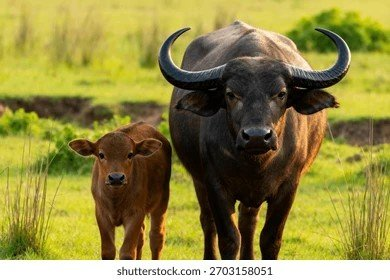

Ruto’s Buffalo Plan Is Old News: Kenya Has Been Planning This Since 2018
News
When President William Ruto floated the idea of milking buffaloes to ease Kenya’s dairy shortage, many Kenyans heard it as a surprise. It isn’t one. The plan has been sitting in government files for years, and what has been missing all along is the follow-through.
Speaking at the Agriculture and Food Systems Transformation Summit in Nairobi, the president pointed to India, where buffaloes are a pillar of the dairy trade. “If others are milking them, why can’t we do the same?” he asked, arguing that the country needs more sources of milk. He said he has asked the Livestock Development PS, Jonathan Mueke, to help find better camel breeds and buffaloes, and suggested starting small.
The paper trail shows how old the idea is. Farmers began asking the Ministry of Agriculture about keeping the animals as far back as 2018. Kenya and Brazil have since endorsed a protocol covering the trade in them, with the Kenya Animal Genetic Resources Centre (KAGRC) and farmers who applied set to hold the first stock. Then, on January 31, 2025, Agriculture CS Mutahi Kagwe signed a gazette notice declaring the domesticated water buffalo a food animal under the Meat Control Act. A two-year pilot was outlined, limited to KAGRC and approved farmers.
So the legal door has been open for well over a year. Yet reports at the time noted that the species was not in the country, and critics asked where the animals would come from and how they would be brought in. Whether any have arrived since is not clear from the public record.
The practical hurdles are real. Buffaloes would need health checks, disease monitoring, enough feed and water, and breeding know-how. Government would also have to work out import costs and expected milk output, and whether processors will buy it. Conservationists add that the animal in question is the domestic water buffalo, a different species from the wild Cape buffalo seen in Kenya’s parks.
For Kenyans the message is simple: the policy exists, the president is now publicly pushing it, and the test will be whether animals actually reach farms.